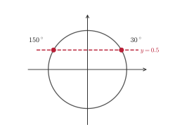
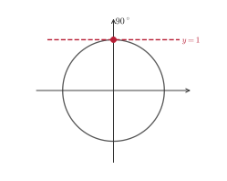

別冊練習問題 9 の解答 三角比の2次方程式（範囲に注意）
(1) \(0^\circ\leqq\theta\leqq180^\circ\) のとき、方程式 \(2\sin^2\theta+5\sin\theta-3=0\) を解け。
\(\sin\theta\) で整理
\(s=\sin\theta\) とおく。
\[2s^2+5s-3=0\]たすき掛けで因数分解する（展開して確かめる）。
\[(2s-1)(s+3)=2s^2+6s-1s-3=2s^2+5s-3\]\[(2s-1)(s+3)=0\]範囲を確認
\(0^\circ\leqq\theta\leqq180^\circ\) より \(0\leqq s\leqq1\)。
\[s=\dfrac{1}{2}\ \text{または}\ s=-3\]\(s=-3\) は範囲外。
角を求める
単位円で、\(y=\dfrac{1}{2}\) の高さの直線と円の交点を探す。\(0^\circ\leqq\theta\leqq180^\circ\) は上半分。

【答案】
\[\theta=30,\ 150^\circ\]答
(2) \(0^\circ\leqq\theta\leqq180^\circ\) のとき、方程式 \(2\sin^2\theta+2\sin\theta-4=0\) を解け。
\(\sin\theta\) で整理
\(s=\sin\theta\) とおく。
\[2s^2+2s-4=0\]たすき掛けで因数分解する（展開して確かめる）。
\[(2s-2)(s+2)=2s^2+4s-2s-4=2s^2+2s-4\]\[(2s-2)(s+2)=0\]範囲を確認
\(0^\circ\leqq\theta\leqq180^\circ\) より \(0\leqq s\leqq1\)。
\[s=\dfrac{2}{2}\ \text{または}\ s=-2\]\(s=-2\) は範囲外。
角を求める
単位円で、\(y=\dfrac{2}{2}\) の高さの直線と円の交点を探す。\(0^\circ\leqq\theta\leqq180^\circ\) は上半分。

【答案】
\[\theta=90^\circ\]答
(3) \(0^\circ\leqq\theta\leqq180^\circ\) のとき、方程式 \(2\sin^2\theta+7\sin\theta-4=0\) を解け。
\(\sin\theta\) で整理
\(s=\sin\theta\) とおく。
\[2s^2+7s-4=0\]たすき掛けで因数分解する（展開して確かめる）。
\[(2s-1)(s+4)=2s^2+8s-1s-4=2s^2+7s-4\]\[(2s-1)(s+4)=0\]範囲を確認
\(0^\circ\leqq\theta\leqq180^\circ\) より \(0\leqq s\leqq1\)。
\[s=\dfrac{1}{2}\ \text{または}\ s=-4\]\(s=-4\) は範囲外。
角を求める
単位円で、\(y=\dfrac{1}{2}\) の高さの直線と円の交点を探す。\(0^\circ\leqq\theta\leqq180^\circ\) は上半分。
\[\sin\theta=\dfrac{1}{2}\ \Rightarrow\ \theta=30^\circ,\ 150^\circ\]【答案】
\[\theta=30,\ 150^\circ\]答